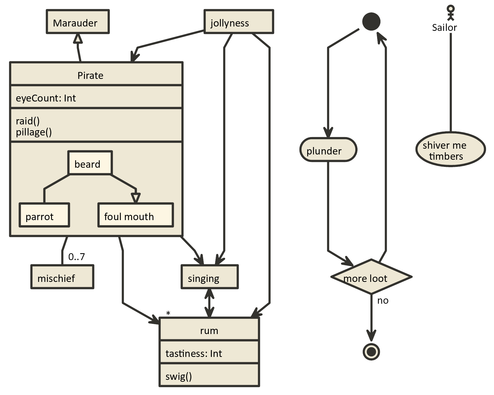

Ernest 'iFire' Lee's Journal - Chibifire
1
Introduction
2
Portfolio
2.1
Current Projects:
2.2
Previous Projects:
2.2.1
Heavy Gear Assault - Mektek Studos / Stompybot:
2.2.2
Jam at iamagamer:
3
Physics in Super Jet Racing - 29 June 2015
3.1
Additional Notes
3.1.1
Grid System
4
Pirate Nomnoml
References
Ernest ‘iFire’ Lee’s Journal - Chibifire
Chapter 4
Pirate Nomnoml
Sunday, April 16, 2017 4:11:05 PM
Nomnoml
makes uml diagrams.
